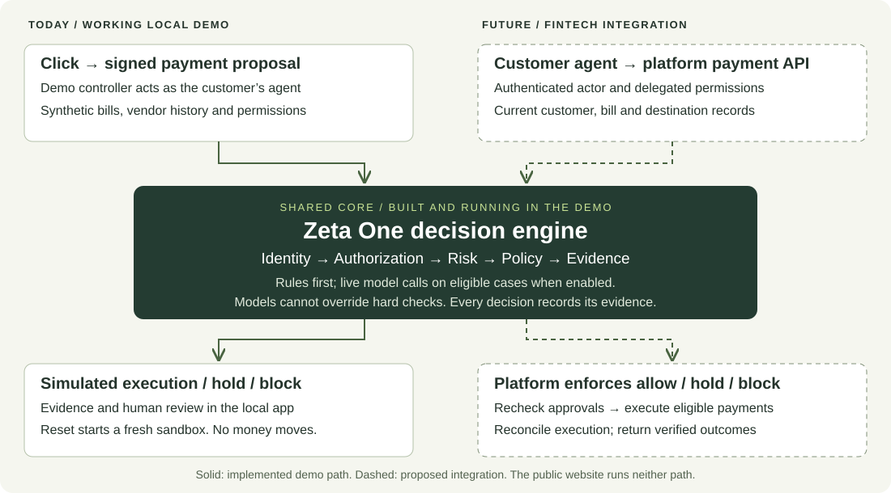

The threat already exists.
Impersonated vendors and fraudulent payment instructions can redirect a legitimate business payment. The FBI recommends independently verifying changes to account information.
FBI: business email compromise ↗Trust and risk intelligence for AI agents that move money.
Lower model costs: rules, typed decisions and deeper model review each have a role; people verify unresolved questions.
Smoother customer experience: routine payments flow; verification scales with risk.
Impersonated vendors and fraudulent payment instructions can redirect a legitimate business payment. The FBI recommends independently verifying changes to account information.
FBI: business email compromise ↗An invoice is data. An agent can mistake instructions inside it for authority. NIST describes how malicious content can hijack an agent’s task.
NIST: agent hijacking research ↗A known agent with valid permissions can still be manipulated.
Verify the actor. Bound its authority. Assess the action.
A person’s verified finding becomes a risk adjustment that the next decision cites.
Payment fraud is established. Agent-specific financial losses are not yet quantified by the research cited here.
One example: a trusted agent proposes a permitted payment, but a recent bank-detail change warrants verification.
AP assistant · October office supplies · 16 prior payments
A familiar vendor, but its default ACH account changed three days ago.
The registered AP agent acts for Larkspur Analytics. This $2,515 payment is within its $5,000 per-payment limit.
16 prior payments and a typical amount. The default ACH account changed from First Harbor Savings to Meridian Trust Bank.
The illustrative policy holds the payment and routes a confirmation request to the finance owner.
Authored synthetic scenario, not a live engine result. No model was run. Cost and latency have not been measured.
Synthetic example · No real account data · Payment execution simulated
Synthetic scenario categories, not claims of production coverage.
Built to integrate with financial platforms like Rho. Today’s demo uses a customer-side gateway and simulated payments; protection covers actions routed through that gateway.
The local app runs the engine we built. A fintech integration would connect that same core to customer records and the platform’s payment execution service.
Working demo. Each payment step computes a fresh decision when clicked. With live models enabled, eligible assessments call Claude during the run; deterministic checks can decide other cases without a model. The input records are synthetic and payments are simulated.
This website. Explore recorded decisions in the payment workspace. Its examples use synthetic inputs assessed by the real deterministic engine; browsing triggers no new assessments, model calls or payments.

Place the engine in the payment path. Enforce allow, hold or block on the server, with no unrestricted route around the checks.
Bind each agent to its customer and delegated limits. Connect identity, request verification, expiry and revocation to platform systems.
Connect bills, vendor and bank-change history, and settled or held payments. Preserve evidence sources, freshness and customer isolation.
Bind the decision to the exact payment, recheck changed state, reserve spend and prevent duplicate execution. Reconcile retries and uncertain payment responses.
Route holds to authorized staff. Record what they verified and how, recheck approvals, and make trust adjustments traceable and revocable.
Add durable storage, monitoring, rate limits and outage handling. Validate on representative customer data in shadow mode before a controlled rollout.
Rho’s API available to this project has no payment-write endpoint or pre-execution review hook. These connections would require platform engineering; they are not implemented here. Sharing the engine does not establish production readiness.
The right model for the task, human verification built in, and both inference and customer friction counted as costs.
Rules handle routine checks. Jev by TypeSafe returns typed answers and probabilities to fixed questions rather than generating prose: a deliberate low-cost decision tier. Language models provide deeper interpretation; people verify facts the models cannot establish. We compare the cascade with direct model review.
Hard permissions stay in code. We evaluated Qwen 3.6 27B on a rented GPU we controlled, simulating a fintech running its own risk model. That path can keep risk inference within the fintech’s environment. Hosted Jev, Claude and web research still send data externally when used. OpenJev is an independent, self-hosted possibility for typed decisions; we have not evaluated it.
Allow routine payments, hold unresolved questions for a person, and block clear violations. Measure legitimate payments held or blocked alongside fraud allowed, inference spend and latency. A legitimate payment needing verification is not automatically an unnecessary challenge.
Separate development and frozen test/hard sets; blind labels with human checks and adjudication; simple baselines; per-category confusion matrices and confidence intervals; paired comparisons and error analysis. We report failures alongside improvements. Limited synthetic variation and partly checked labels constrain the conclusions.
How the evaluation works ↗A person’s verified finding can block a payment method or make a confirmed bank change a soft signal. Reports alone change no trust. Adjustments are scoped, revocable and cited next time. A case review assistant gathers records, researches the vendor and links its claims to sources; people record findings and make consequential decisions.
Jev answers structured questions; a language model interprets and explains. Jev’s calibration on this task has not been measured. Model routing depends on the configuration, and no model can override hard constraints.
In control theory, ζ = 1 is critical damping: a return to stability without overshoot. In agentic finance, it’s a design principle—match the intervention to the risk.
Let legitimate, low-risk actions proceed.
Ask for the verification the uncertainty warrants.
Enforce hard boundaries and stop clear threats.
Built to bring agent risk intelligence into the finance platform’s own decision process—with the context to act on it.
A single score can hide the distinction between an unknown agent, an exceeded limit, and a suspicious payment. Zeta One keeps identity, authorization, and risk separate.
The platform receives the underlying signals, source evidence, policy results, and decision reasons alongside the recommendation. Its risk team can inspect the result, apply its policies, and use those signals in its own models.
A person records what turned out to be true and how they know it. A verified fraud finding blocks that bank account for the business; a bank change a person confirmed stops being a hard flag, so a model may clear it. A customer’s report alone changes nothing.
Each change is an append-only record that the next decision cites, and verified outcomes become evaluation cases. When a customer disputes a payment, an assistant gathers the records and researches the vendor, with every point linked to its source. A person decides.
Built and recorded end to end on synthetic data. “Verified” records a person’s stated check; the gateway does not independently confirm it. Payment execution is simulated.
Make the improvement measurable. Compare approaches on the same labeled cases and examine the errors, not just the happy path.
Report fraud caught, honest payments stopped, inference spend and latency together, per category, with intervals.
No model can lower a hard flag, so a persuasive invoice cannot clear a recent, unconfirmed bank change. The cost: an honest payment with such a flag, an urgent invoice included, always waits for a person.
If a model errors, times out or refuses, the payment is held. Breaking the model never buys an allow; the cost is more review while a model is down.
Rules decide clear cases without a model, which saves cost but means an attack that trips no rule is never read by one. On the hard set, two frauds went through that way.
One run of each configuration. On 100 labeled synthetic test cases, selective escalation to Claude Opus decided 91 acceptably at $15 per 1,000 decisions, an open-weight model on one rented GPU 94 at under $2 (its prompt was tuned on the dev set), and the rules alone 79. On the 12 scored hard cases, Opus on every payment led with 10. The results and their limits ↗ These are not production accuracy or savings claims.
The demo recording will follow a payment from proposal to evidence-backed outcome.
Explore recorded decisions ↗Reserved for the working-system walkthrough.